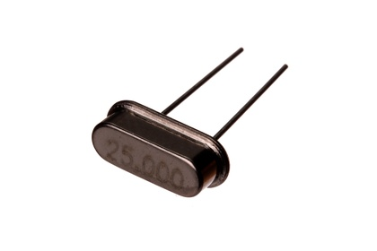

11 mm 25 MHz Crystal - XT25

Summary
Name: 11 mm 25 MHz Crystal
ID: XTAL-11-X-MZ25-01
Hex ID: XT25
WebPage: https://github.com/oomlout/oomlout-OOMP/wiki/XTAL-11-X-MZ25-01
Short URL: http://oom.lt/XT25
Revision History: https://github.com/oomlout/oomlout-OOMP/blob/master/parts/XTAL-11-X-MZ25-01/
| Type |
Size |
Color |
Description |
Index |
XTAL
Crystal |
11
11 mm |
X
|
MZ25
25 MHz |
01
|
Images
About
This part is awaiting a description.
Specifications
| Info |
Value |
| Type |
Crystal |
| Size |
11 mm |
| Description |
25 MHz |
Extra Details
Spotted a mistake, want to add more? Let us know oomp@oomlout.com
All images and resources are licensed [CC BY-SA] unless otherwise stated (ie. the datasheets)